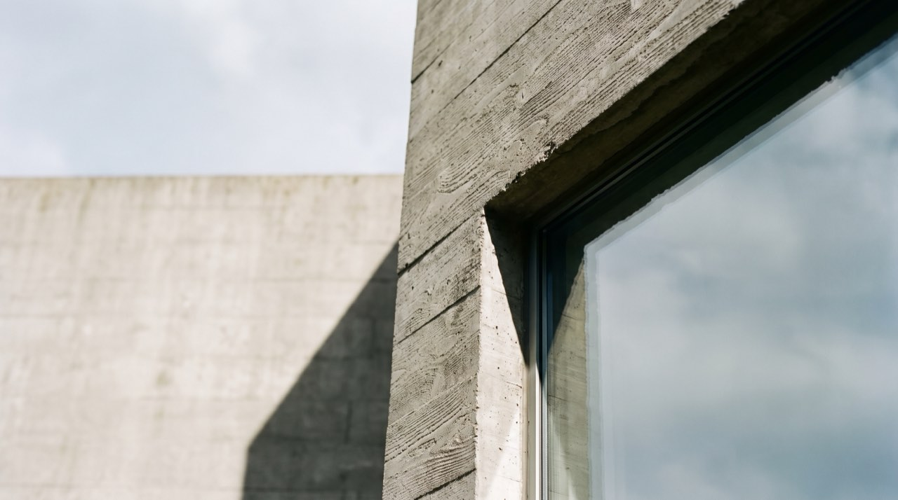
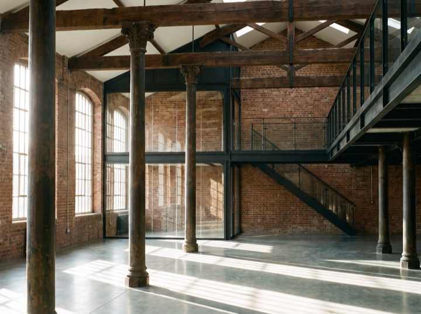
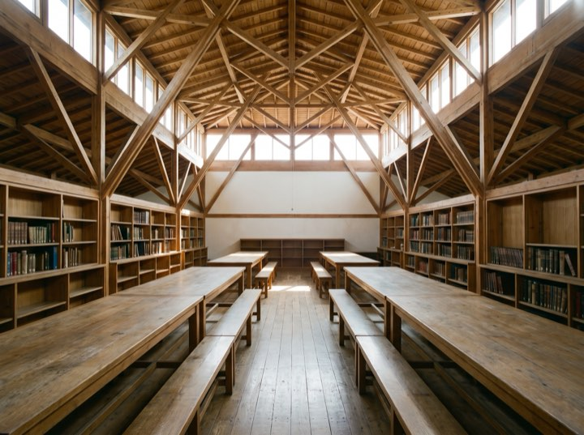

Private houses
New build and substantial renovation. Typically construction budgets from $900k, where the site or the brief has genuine difficulty in it.
A twelve-person studio working on houses, small cultural buildings and adaptive reuse. Forty-one built projects, indexed by budget, site and constraint, so you can find the one closest to your problem.
Index

Roughly eight projects at a time. We are not the cheapest and we are honest about that early.
New build and substantial renovation. Typically construction budgets from $900k, where the site or the brief has genuine difficulty in it.
Industrial, agricultural and civic buildings given a second life. The constraint is the interesting part and usually the reason it works.
Small galleries, libraries and community buildings, including competition work and public procurement.
Before you buy a site or commit to a scheme. A short, paid piece of work that regularly saves people a great deal.
Five stages, and we stay through the last one, which is where most of the risk actually sits.
A short paid study: what the site allows, what it will cost, and whether the idea survives contact with reality.
Two or three genuinely different directions rather than one refined proposal. You choose a direction, not a drawing.
Resolved with engineers and costed properly. Permitting runs from here, and we handle it.
Tender, contractor selection and site administration through to completion. We do not hand over drawings and disappear.
From the index
Each one is numbered in the register above. These are the entries with the most to show.




A first conversation is free. Bring the project nearest yours from the index and we will tell you what it actually cost and what it actually took.
Enquiries for 2027 now open. Feasibility studies available as standalone work.